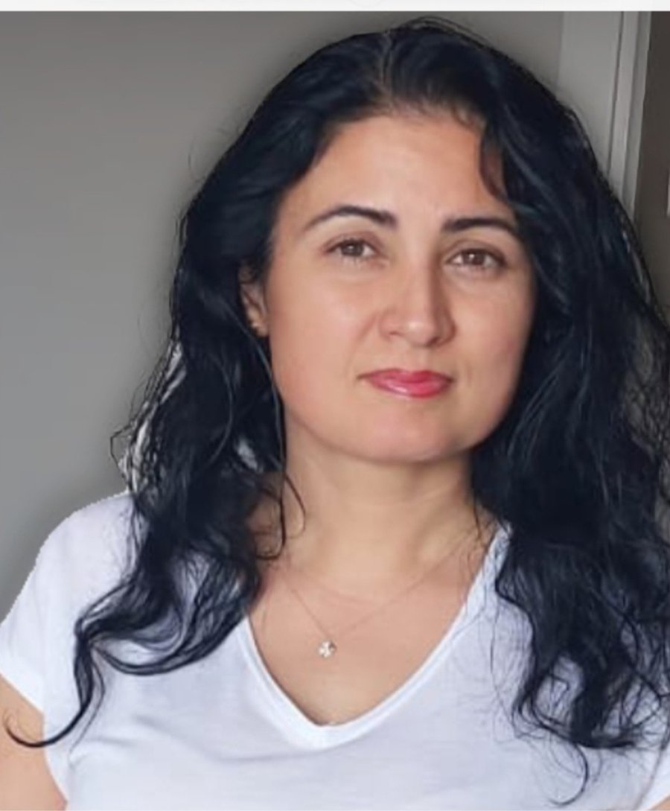

Ph.D. Physics
Physicist & Physics Teacher

I am a physics teacher with a Ph.D. in physics, working at a public school for gifted students. My doctoral research focused on semiconductor thin films and nanomaterials, and I keep a strong interest in astronomy.
I develop and mentor science projects across many fields with students of all ages, and I am currently expanding into data science and artificial intelligence.
In Türkiye, successful teachers representing each province attend a celebratory program in the capital on Teachers' Day. These individuals are known by the traditional title of "Teacher of the Year". I, too, was named Teacher of the Year in 2019, and I proudly represented my province and my colleagues—who are just as hardworking and successful as I am.